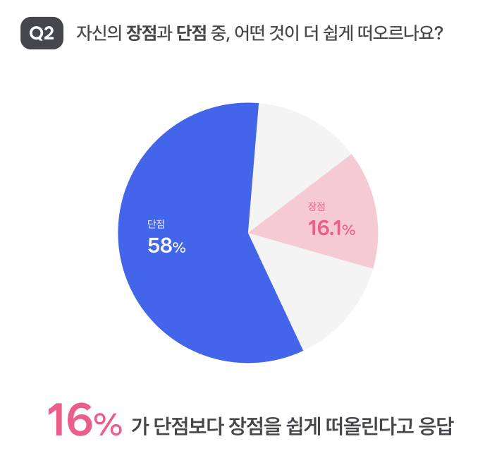
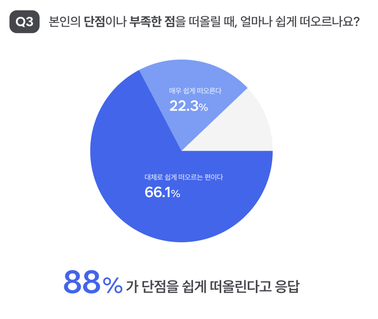
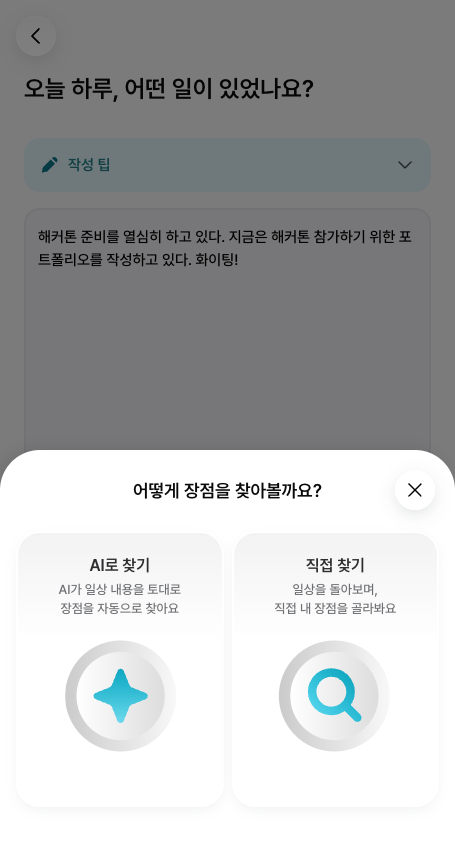
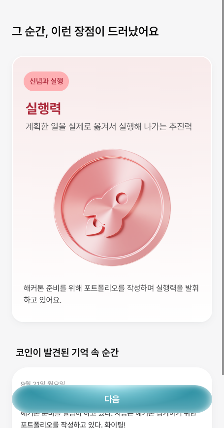
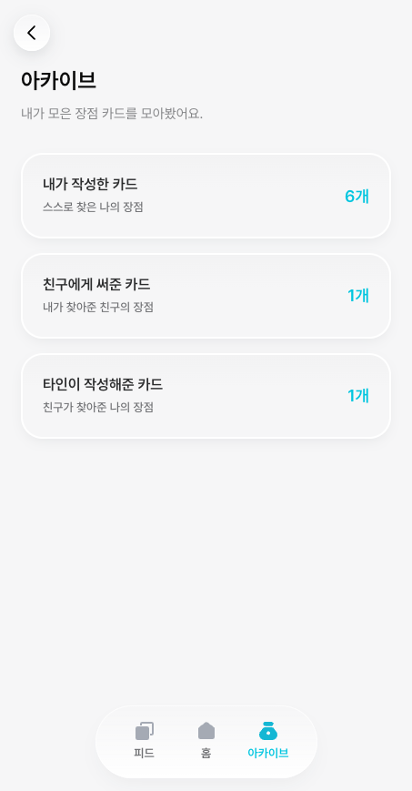
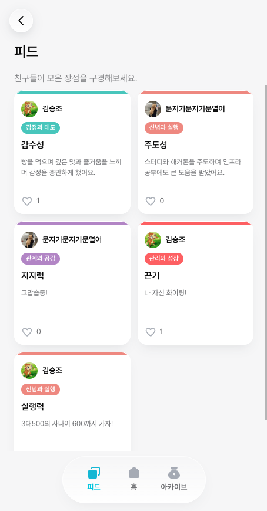
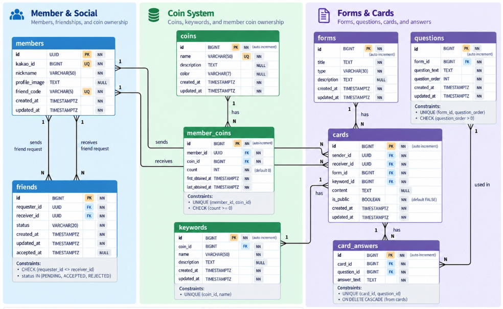
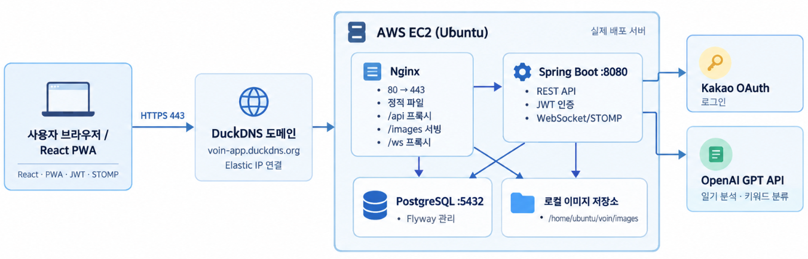

장점에 대한
기준이 애매함
“장점으로서 자신있는 걸 얘기했는데, 내세울 수 있는 기준이 맞을까 라는 생각이 많이 들어서 힘들었던 것 같다.”
연세대학교 미래캠퍼스
컴퓨터정보통신공학부
컴퓨터공학 전공
2026.08 수료
백엔드 개발부터 배포·운영까지 경험하며 문제의 현상보다 원인을 추적하고 해결하는 개발자입니다.
생성형 AI 기반 장점 발견 서비스
배포된 서비스 voin-app.duckdns.org 바로가기자기 인식에 관심이 높은 20 · 30대는 정작 본인의 장점을 객관적으로 파악하는 일을 어려워합니다.
장점보다 단점이 먼저 떠오름
자연스럽게 잘하는 것은 장점으로 세지 않음
강점을 특정 영역으로만 한정해서 생각
그래서 장점을 찾는 과정 자체를 도와주는 서비스가 필요하다고 판단해 이 프로젝트를 기획했습니다.


인터뷰를 통해 알게 된, 장점을 적기 어려운 이유는 세 가지로 좁혀졌습니다.
“장점으로서 자신있는 걸 얘기했는데, 내세울 수 있는 기준이 맞을까 라는 생각이 많이 들어서 힘들었던 것 같다.”
“스스로 미담을 생각하는 거 같아서 부끄러운 점이 있었다.”
“내가 나에 대한 좋은 것을 쓰기 부끄럽고 뭘 잘하는지 잘 모르겠다.”
“장점은 평소에 생각하고 있지 않아서 어려웠다.”
“장점은 크게 일상에서 생각해 본 적이 없었다.”





데이터 무결성을 애플리케이션에만 의존하지 않고 DB 제약조건으로 보장
FK · UNIQUE · CHECK 제약조건을 통해 중복 관계와 비정상 데이터를 데이터베이스 단계에서 방지하도록 설계했습니다.
테이블 간 관계를 표현하는 데 집중
관계뿐 아니라 데이터의 유효성까지 보장하도록 설계
관계를 연결하는 ERD에서, 데이터 무결성을 보장하는 ERD로.

운영 중 발생한 장애 3건입니다.
systemctl → journalctl 추적 결과, 기동 시 실행되는 Seed 로직이 운영 DB에서 외래키 제약(FK Constraint) 위반/api 요청까지 가로채 SPA fallback으로 처리, 요청이 서버에 도달하지 않음여러 API 호출로 분산된 비즈니스 로직을 하나의 트랜잭션으로 구성하며 데이터 정합성의 중요성을 경험했습니다.
OS, 의존성, 환경변수, 데이터베이스 초기화 등 환경 차이가 실제 장애로 이어질 수 있다는 것을 경험했습니다.
로그와 요청 흐름을 따라가며 문제 범위를 좁히는 방식으로 원인을 분석했습니다.